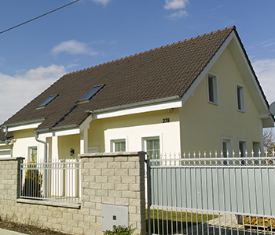
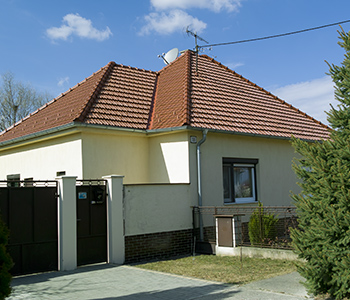
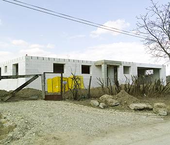
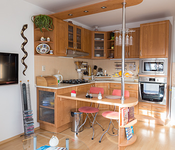

Na tejto pod stránke nájdete informácie ohľadom našej služby vypracovávania projektových dokumentácií stavebných objektov, jednoduchých a drobných stavieb a ich zmien (rodinných domov, polyfunkčných objektov, skladov, bytových domov a drobných objektov).
Vypracovávame projektové dokumentácie ako podklad k vydaniu územného rozhodnutia, k stavebnému povoleniu. Projektová dokumentácia k stavebnému povoleniu je vypracovaná zároveň k realizácii stavby. PD k vydaniu územného rozhodnutia je potrebná pre novostavby rodinných domov (ak nebol schválený územný plán danej lokality). Okrem PD na novostavby vypracovávame prestavby, nadstavby a prístavby (rekonštrukcie).
PD architektúry, pre názornosť obsahuje aj axonometrický pohľad na novo navrhovaný krov, kde je priamo vidieť vzhľad a riešenie krovu. Dokumentácia je rovnako obohatená o perspektívne pohľady (vizualizácie) na navrhovaný rodinný dom, takže je možné ho skôr vidieť ako bude zrealizovaný. Spolupracujeme so špičkovými odborníkmi v danej oblasti.
Na podstránke realizácie si môžete prezrieť stavby, ktoré boli projektované našou firmou.

Kompletná projektová dokumentácia na novostavbu rodinného domu do Siladíc. Fotografia po zrealizovaní.

Sanácia pôvodného rodinného domu, výmena latovania a strešnej krytiny na existujúcej stavbe.

Rozostavaný rodinný dom, podľa projektovej dokumentácie vypracovanej mojou firmou.

Interiér podkrovného bytu zrealizovaný podľa návrhu a vizualizácií mojou firmou.
Zabezpečujeme aj pred projektovú prípravu čo zahŕňa vyhľadanie mapových podkladov, listov vlastníctva, vypracovanie architektonických štúdií a ďalších potrebných úkonov. Taktiež vypracovávame situácie osadenia s projektami prípojok pre katalógové rodinné domy.